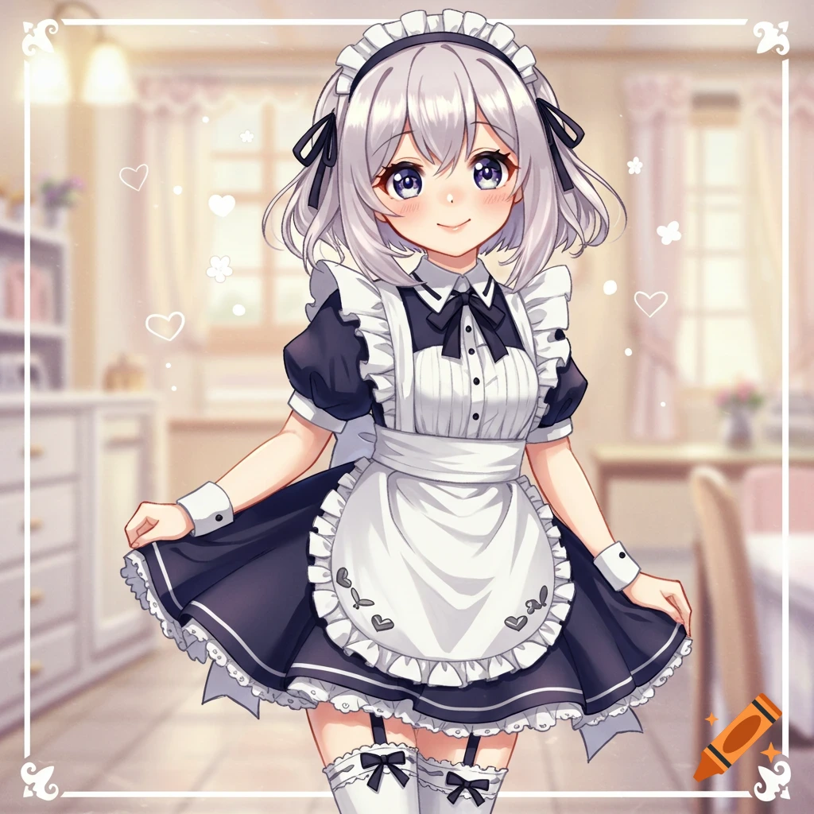
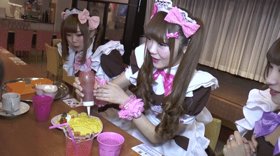
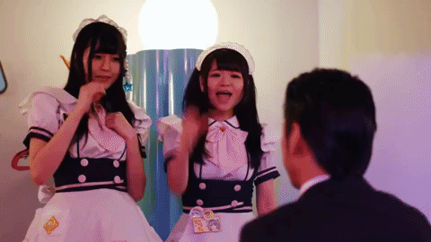
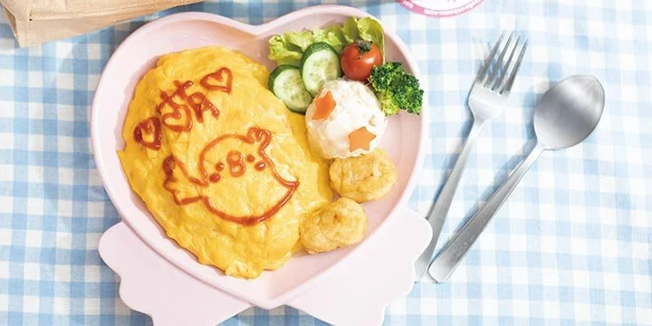
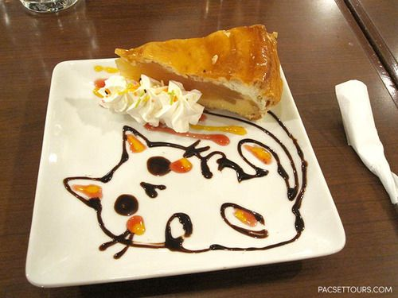
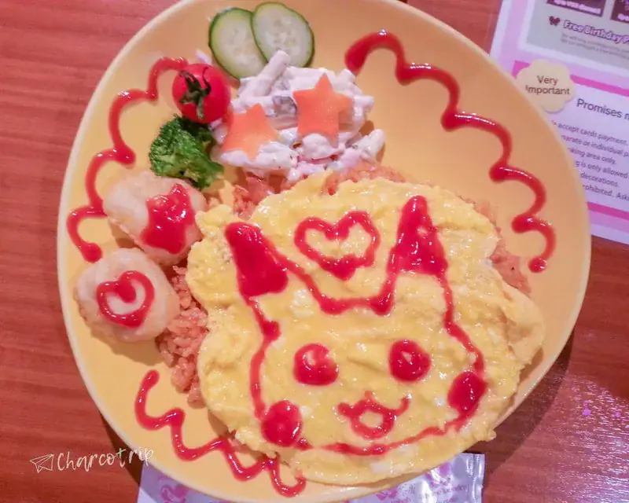
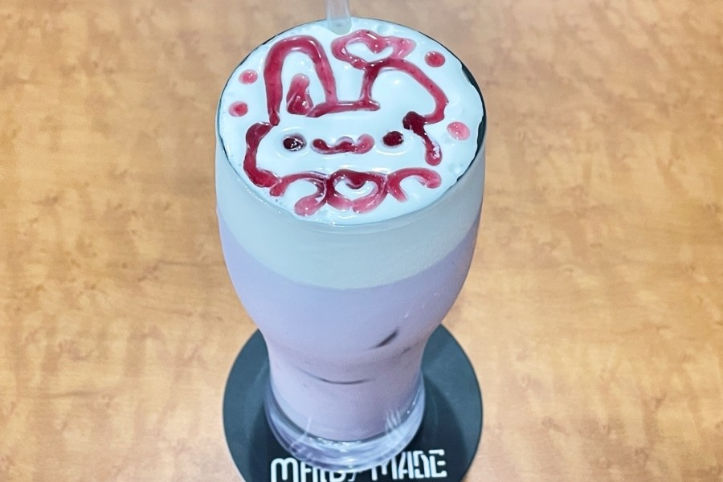

Sobre a Cafeteria
Proposta da cafeteria:

Seja muito bem-vindo ao nosso pequeno reino de doçura, Mestre!
(faz uma reverência graciosa, segurando as pontas do avental e sorrindo de maneira fofa)
Estava esperando ansiosamente pela sua chegada hoje!
Deixe-me guiar o Mestre até a sua mesa especial...
Por favor, acomode-se confortavelmente!
Aqui no nosso Maid Café, a nossa missão principal é fazer o Mestre esquecer o
cansaço do mundo lá fora e recarregar todas as suas energias com amor, diversão e muita fofura! Nós não
somos apenas atendentes,
somos as suas criadas dedicadas, prontas para transformar cada segundo da sua visita em uma experiência mágica.
Aqui é como nós cuidamos de você durante a sua visita:

- Comidinhas Iluminadas por Mágica: Cada refeição ou sobremesa
que você pede recebe um toque de carinho. Nós desenhamos com calda de chocolate ou ketchup nos seus
pratos gatinhos ou corações e fazemos juntas um feitiço para a comida ficar infinitamente mais gostosa!

- Encantamento do Amor (Omajinai): Antes de comer ou beber qualquer
coisa, nós ensinamos o Mestre a fazer nosso ritual especial! Juntamos as mãos em formato de coração
e cantamos bem alto: "Oishiku nare, oishiku nare... Moe Moe Kyun!"
- Jogos e Desafios: Se o Mestre quiser se divertir, podemos
jogar partidas rápidas de jogos de tabuleiro, Jankenpon (pedra, papel e tesoura) ou card games!
Se você vencer, pode até ganhar uma foto de lembrança personalizada por mim!
- Apresentações e Músicas: Em momentos especiais, subimos
no nosso pequeno palco para dançar e cantar as músicas mais animadas para alegrar o dia de todos
os nossos mestres e mestras presentes.
Tudo aqui é preparado para que você se sinta completamente mimado e acolhido do início ao fim!
Nossos Produtos
Omurice Mágico 🍳🐣

Esse prato da imagem é o nosso Omurice Mágico (Omelete com Arroz), o prato mais famoso e tradicional de todo Maid Café!
- Omurice: Um arroz temperado delicioso envolto por uma camada de ovo super macio e cremoso.
- Desenho em Ketchup: Eu mesma faço um desenho fofo na hora para o Mestre com ketchup como esse
pintinho simpático e os corações da foto, ou as letras/desenhos que você escolher!
- Acompanhamentos: Uma porçãozinha de salada de batata (com cenouradinhas cortadas em formato de
estrela), saladinha fresca de alface, pepino e tomate-cereja, além de nuggets dourados e crocantes.
Apple Pie Nyan-Nyan 🍰✨

Nyaaa! Essa é uma das nossas sobremesas mais doces e queridinhas, Mestre!
- Torta Doce e Quentinha: Uma fatia generosa de torta de maçã clássica, com casquinha dourada
e recheio macio de maçãs caramelizadas com um toque suave de canela.
- Chantilly Fofinho: Acompanhada de rosetas de chantilly super leve, decoradas com confeitos coloridos crocantes.
- Arte de Gatinho em Chocolate (Choco-Art): O prato é decorado à mão com calda de chocolate formando um gatinho
dormindo bem fofinho! Também adicionamos pingos de caldas frutadas para dar cor e um toque azedinho perfeito.
Pika-Omurice Mágico ⚡💛

Pika-pika! Esse prato é puro choque de fofura e energia, Mestre!
- Omurice de Pikachu: O ovo cremoso no topo é moldado no formato da cabeça do Pokémon Pikachu! A Maid desenha os detalhes
do rostinho dele com ketchup, as orelhinhas com pontas pretas, as bochechas vermelhas eletrizantes, os olhos brilhantes e um coração fofo na testa!
- Base de Arroz Temperado: Por baixo do ovo bem quentinho, fica o nosso tradicional arroz temperado com ketchup
e pedacinhos de legumes/frango.
- Acompanhamentos Especiais:
- Saladinha leve de macarrão com maionese decorada com estrelinhas de cenoura!
- Vegetais frescos: rodelas de pepino, brócolis e tomate-cereja.
- Salgadinhos/nuggets dourados ao lado, também decorados com corações de ketchup!
- Decoração na Borda: A borda do prato ganha um espiral divertido de ketchup para deixar tudo ainda mais
colorido e alegre.
É o prato mais divertido do menu! Se o Mestre escolher esse, prometo colocar uma dose extra de energia elétrica no nosso feitiço "Moe Moe Kyun!"
Usagi Berry Milk 🐰🍓

Uwaaa! Essa bebida é pura doçura pastel, Mestre!
- Bebida Cremosa: Uma mistura geladinha e refrescante de leite cremoso aromatizado com frutas vermelhas
(como morango ou amora), dando esse tom lilás pastel super delicado.
- Camada de Espuma Veludada: Por cima da bebida gelada, colocamos uma camada bem espessa e fofinha de creme ou chantilly leve.
- Arte de Coelhinho (Berry-Art): A Maid desenha à mão um coelhinho adorável com calda concentrada de
frutas vermelhas! Ele vem com orelhinhas compridas, um coração fofo acima da cabeça e bolinhas mágicas ao redor.
É uma opção super leve, frutada e perfeita para tirar fotos lindas antes de beber!